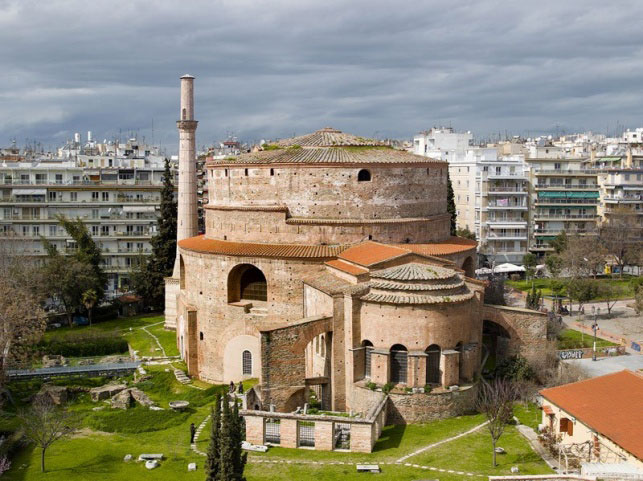
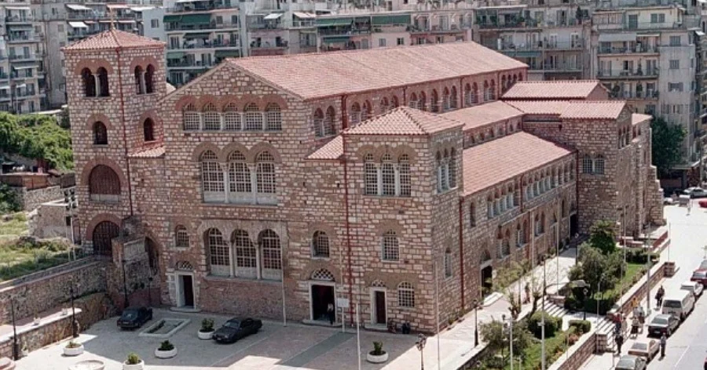

Ροτόντα

H Ροτόντα είναι θολωτό κυκλικό κτίσμα του 4ου αιώνα στη Θεσσαλονίκη, παρόμοιο με το Πάνθεον της Ρώμης. Η αρχική χρήση του δεν είναι γνωστή αλλά διατυπώθηκαν ως τώρα διάφορες υποθέσεις: ότι υπήρξε ναός του Διός, ή των Καβείρων, ότι κατασκευάστηκε από τον Καίσαρα Γαλέριο ως μαυσωλείο του, ή ως αίθουσα του θρόνου στο ανακτορικό συγκρότημα. Λόγω της μη χρήσης του, μετατράπηκε επί βυζαντίου σε χριστιανικό ναό των Ασωμάτων Δυνάμεων και μετά την Απελευθέρωση της Θεσσαλονίκης, το 1912, αφιερώθηκε στον Άγιο Γεώργιο. Συμπεριλαμβάνεται στα Παλαιοχριστιανικά και Βυζαντινά μνημεία της Θεσσαλονίκης ως Μνημείο Παγκόσμιας Κληρονομιάς της UNESCO.
Άγιος Δημήτριος

Ο Ναός του Αγίου Δημητρίου βρίσκεται στη Θεσσαλονίκη και είναι αφιερωμένος στον Άγιο Δημήτριο, τον πολιούχο της πόλης. Βρίσκεται στην ομώνυμη οδό και είναι πεντάκλιτη βασιλική του «ελληνιστικού τύπου», αλλά με πολλά ιδιαίτερα και σπάνια χαρακτηριστικά σε σχέση με άλλους ναούς της ίδιας περιόδου στην Ελλάδα.
Κάστρα

Τα Κάστρα της Θεσσαλονίκης είναι ένα σύμπλεγμα τειχών, πύργων και οχυρώσεων με μοναδική αρχαιολογική, αρχιτεκτονική και ιστορική σημασία.Αυτό που λέμε σήμερα "Κάστρα της Θεσσαλονίκης" είναι μέρος μόνο της παλιάς οχύρωσης. Στην αρχική τους μορφή, τα τείχη και τα κάστρα της Θεσσαλονίκης περιέβαλλαν ολόκληρη την πόλη, συμπεριλαμβανομένης της πλευράς που βρέχεται από τη θάλασσα.Η σχεδίαση και η τεχνολογία των τειχών τα κάνει να μοιάζουν πολύ με τα βυζαντινά τείχη της Κωνσταντινούπολης, αν και βέβαια το μέγεθος διαφέρει.Οι πρώτες οχυρώσεις δημιουργήθηκαν με την ίδρυση της πόλης κατά τους ελληνιστικούς χώρους αλλά η σημερινή μορφή των κάστρων είναι στο μεγαλύτερο μέρος κατασκευή του 4ου μ.Χ. αιώνα.